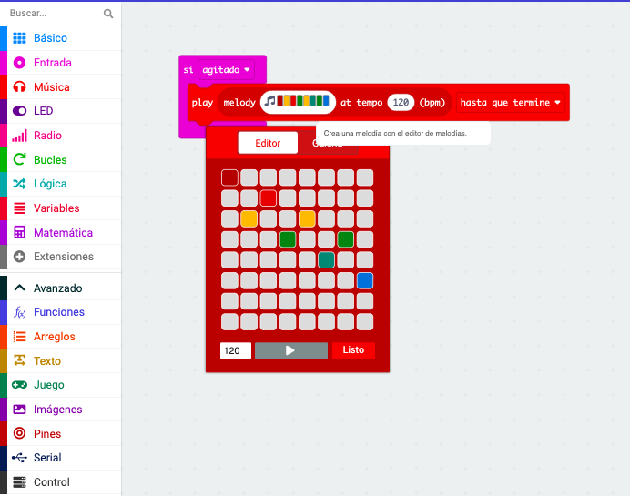
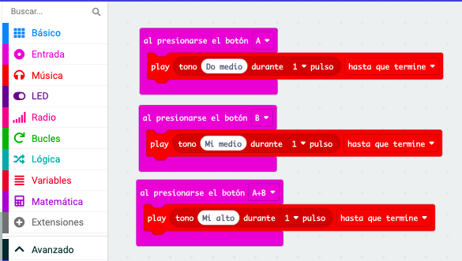
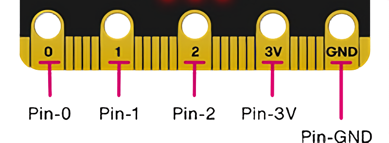
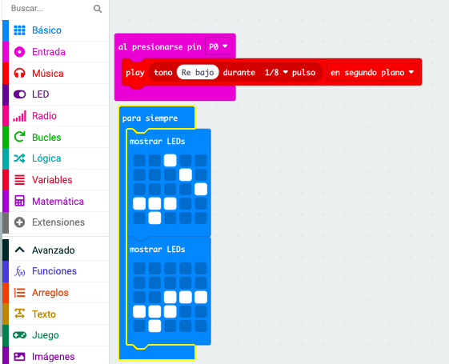
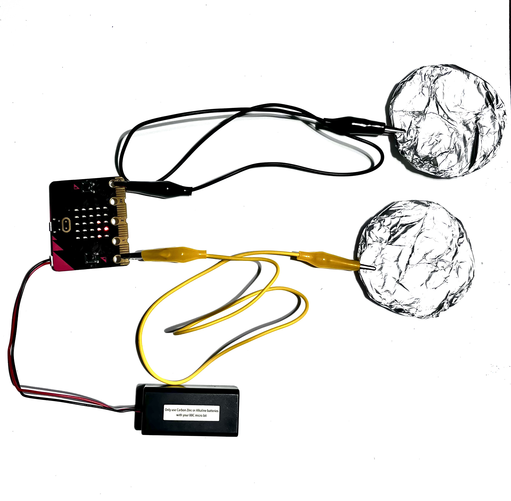

1. ¡Hay música en la tecnología!
 Como ves, se pueden hacer multitud de cosas con la placa micro:bit.
Como ves, se pueden hacer multitud de cosas con la placa micro:bit.
Pero para llegar a conseguir nuestro reto, debes hacer sonar música en tu placa.
¿Cómo? Será muy fácil, ya lo verás.
Visiona el siguiente vídeo de introducción para que veas lo sencillo que puede ser.
¿Te atreves a hacerlo solo/a?
.
.
Aquí tienes unos ejemplos con otras variantes. Puedes practicar a la la vez con tu micro:bit
1. Al agitar, suena una melodía
Queremos que, cuando agitemos la micro:bit, suene la melodía que elijamos.
Para ello, accederemos Makecode y seguiremos los siguientes pasos:
- En la categoría ENTRADA, arrastra el bloque SI AGITADO.
- Después, desde la categoría MÚSICA, arrastra el bloque PLAY MELODY... dentro del bloque SI AGITADO.
- Ahora, haz clic sobre la nota musical al lado de MELODY y elige la melodía que más te guste.
- Por último, puedes probar el código en el simulador o descargarlo a tu micro:bit.

2. Toca tu melodía
Ahora, haz que cada vez que toques un botón, suene un tono diferente.
Para ello, accederemos a Makecode y seguiremos los siguientes pasos:
- En la categoría ENTRADA, arrastra el bloque AL PRESIONAR EL BOTÓN "A".
- Desde la categoría MÚSICA, arrastra el bloque PLAY (TONO
DURANTE...) dentro del bloque AL PRESIONAR EL BOTÓN "A".
Ahora, sigue los mismos pasos pero cambiando el botón "A" a "B".
- En la categoría ENTRADA, arrastra el bloque AL PRESIONAR EL BOTÓN "A" y cambiar la letra por "B".
- Desde la categoría MÚSICA, arrastra el bloque PLAY (TONO
DURANTE...) dentro del bloque AL PRESIONAR EL BOTÓN "B" y cambia "DO MEDIO" por otro tono.
Por último, sigue los mismos pasos pero cambiando el botón "A" por "A+B".
- En la categoría ENTRADA, arrastra el bloque AL PRESIONAR EL BOTÓN "A" y cambiar la letra por "A+B".
- Desde la categoría MÚSICA, arrastra el bloque PLAY (TONO
DURANTE...) dentro del bloque AL PRESIONAR EL BOTÓN "A+B" y cambia "DO MEDIO" por otro tono diferente a los anteriores.

3. Tambor de dedos
También puedes utilizar tu micro:bit conectada a otros elementos externos. ¡Es muy sencillo! Sigue estos pasos:
- PASO 1: Recuerda que la placa micro:bit tiene 5 pines (conectores) donde "enchufar" cables.

- PASO 2: Accede a Makecode. Vamos a decir a nuestra placa que si se toca el PIN 0, que haga sonar un tono.
- En la categoría ENTRADA, arrastra el bloque AL PRESIONAR EL PIN 0.
- Ahora, desde MÚSICA, arrastra el bloque PLAY TONO... y colócalo dentro del bloque anterior.
- Cambiar el tono por un RE BAJO y el pulso por "1/8".
- Si quieres, puedes hacer que los LEDs se iluminen en forma de "tocar un tambor" mientras usa la placa. Mira cómo en la imagen.
- Descargar el código a tu micro:bit y conéctala a la batería (pilas).

- PASO 3: Ahora crea tu tambor.
- Cubre dos trozo de cartón con papel de aluminio.
- Engancha un cable desde el PIN0 a uno de los trozos de cartón.
- Engancha el otro cable desde el pin GNR (ground=tierra) al otro trozo de cartón.

- PASO 4: Sin dejar de tocar un trozo de cartón, golpea el otro con la otra mano.